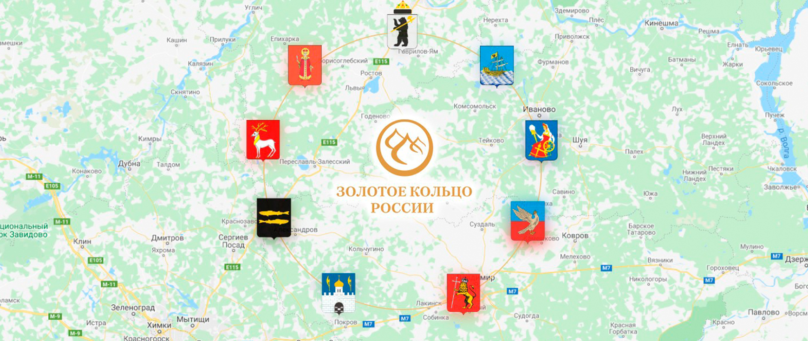

О маршруте
Золотое кольцо России — это туристический маршрут по древним городам северо‑восточнее Москвы. Эти города известны своими храмами, монастырями, купеческими домами и памятниками истории.
На интерактивном кольце ниже отмечены основные города маршрута. Нажмите на название города, чтобы попасть на отдельную страницу с подробной информацией.
Сергиев
Посад Переславль‑
Залесский Ростов
Великий Ярославль Кострома Иваново Суздаль Владимир
Посад Переславль‑
Залесский Ростов
Великий Ярославль Кострома Иваново Суздаль Владимир
Золотое
кольцо
России
кольцо
России
Карта маршрута Золотого кольца
На карте показан примерный маршрут Золотого кольца России с основными городами. Её можно использовать для планирования путешествия или оформления проекта.
